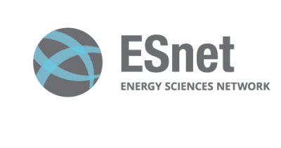

Consortium
Universities
EARL is an EPSRC funded project spearheaded by Queen Mary University of London and the University of Cambridge. There are several industry partners involved in the project as well.
Partners
Cisco Systems UK
Cisco is the worldwide leader in IT and networking that helps companies seize the opportunities of tomorrow by proving that amazing things can happen when you connect the previously unconnected. At Cisco customers come first and an integral part of the DNA is creating long-lasting customer partnerships.
CORSA Technology
Corsa Technology is a high performance infrastructure connecting the world’s biggest networks simply and securely. ISP, SP, IX, CDNs, hosting providers and NREN customers worldwide rely on their solutions to dramatically improve new service delivery, augment security, increase productivity and reduce networking operational expenses. Corsa won the IEEE Technology Innovator Award in 2016.
Geant (UK)
GEANT is a fundamental element of Europe’s e-infrastructure, delivering the pan-European GÉANT network for scientific excellence, research, education and innovation.
Cambridge Cybercrime Centre
 The Cambridge Cybercrime Centre is a multi-disciplinary initiative combining expertise from the University of Cambridge's Computer Laboratory, Institute of Criminology and Faculty of Law. Its overall objective is to create a sustainable and internationally competitive centre for academic research into cybercrime.
The Cambridge Cybercrime Centre is a multi-disciplinary initiative combining expertise from the University of Cambridge's Computer Laboratory, Institute of Criminology and Faculty of Law. Its overall objective is to create a sustainable and internationally competitive centre for academic research into cybercrime.
London Internet Exchange Ltd.
 The London Internet Exchange (LINX) is a global leader of Internet Exchange Points (IXP). The company ethos and aspirations result in constant growth and improvement in our services and as a result, members have access to the most attractive peers at the lowest cost.
The London Internet Exchange (LINX) is a global leader of Internet Exchange Points (IXP). The company ethos and aspirations result in constant growth and improvement in our services and as a result, members have access to the most attractive peers at the lowest cost.
Energy Sciences Network
ESnet provides the high-bandwidth, reliable connections that link scientists at national laboratories, universities and other research institutions, enabling them to collaborate on some of the world's most important scientific challenges including energy, climate science, and the origins of the universe.